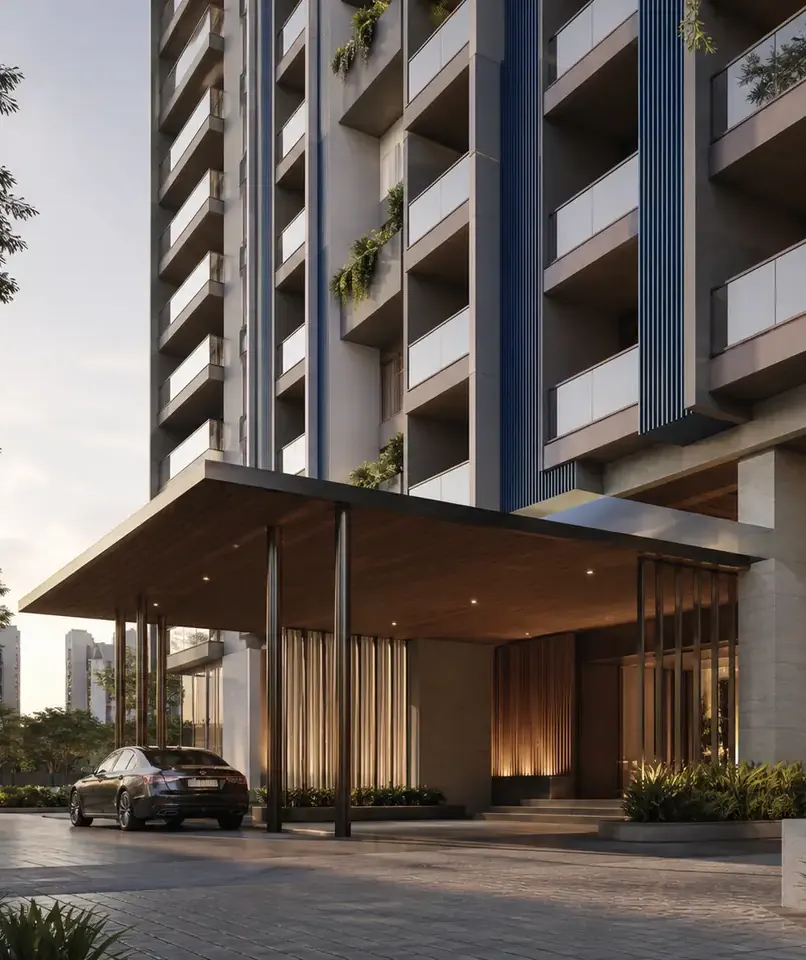

Brigade Banashankari Location
Brigade Banashankari is in Uttarahalli, South Bengaluru, near Banashankari, with Turahalli Forest about 1.5 km away and Uttarahalli Lake about 3.4 km. Gleneagles BGS Hospital is about 5.1 km away, Forum South Bengaluru about 5.9 km, Global Village Tech Park about 6.1 km and the Kengeri Bus Terminal metro station about 7.4 km.
What is nearby
| Landmark | Distance |
|---|---|
| Turahalli Forest | About 1.5 km |
| Uttarahalli Lake | About 3.4 km |
| Gleneagles BGS Hospital, Kengeri | About 5.1 km |
| Forum South Bengaluru, Kanakapura Road | About 5.9 km |
| Global Village Tech Park | About 6.1 km |
| Delhi Public School Bangalore South | About 7.3 km |
| Kengeri Bus Terminal Metro Station | About 7.4 km |
| Kengeri Railway Station | About 8 km |
| Electronic City | About 29 km |
| Kempegowda International Airport | About 56.5 km |
Distances are approximate driving distances; open the map for directions and live travel times.
Other projects on this side of the city
Exploring South and West Bengaluru? Here are the other projects we market nearby, from Kanakapura Road and Kengeri to Mysore Road and Begur Koppa Road.
- Sattva Hill View Kanakapura Road, Kaggalipura
- Provident Equinox 6 Mysore Road, Kengeri
- CKPC Kengeri Plots Kengeri, off Mysore Road
- Sattva Mylasandra Mysore Road
- Purva Mallasandra (Purva Heron) Mallasandra
- Urbanrise Begur Koppa Begur Koppa Road, off Bannerghatta Road
- CKPC Electronic City Electronic City, Hosur Road
- Sattva Codename Jigani Jigani Main Road
- Habulus Oasis Grove Jigani, Anekal - near Electronic City
- Prestige Bannerghatta Road Bannerghatta Road
- Purva Anekal Near Attibele, Anekal
- Purva Silversky Hebbagodi, Electronic City
- Bren Park City Hulimangala, Electronic City
- Amberstone Codename Lake One Anjanapura, JP Nagar 9th Phase
- HPR Avadadenahalli Avadadenahalli, near Chandapura
- Vaishnavi Vana Turahalli, Kanakapura Road
- Aratt Ayatana Residences Aratt One World, Electronic City Phase 1
Brigade Banashankari and Uttarahalli: the setting
Brigade Banashankari's address is Uttarahalli Village and Hobli, in Bengaluru South Taluk, on the Uttarahalli side of Banashankari. In this part of South Bengaluru the draw is not a single landmark but a mix: forest and lake close by, a hospital and transport in Kengeri to the west, and Forum South Bengaluru on Kanakapura Road.
The sections below group the places on this page by what a household needs from them, and suggest how to check each one for yourself.
Green spaces near Brigade Banashankari
Turahalli Forest, about 1.5 km away, is the closest green space in the list and gives this pocket its character. Uttarahalli Lake, about 3.4 km away, adds open water within a short drive.
Inside the gates, about 4.8 acres of the project is landscape. Together, that means a resident has gardens at home and forest and lake nearby for longer walks at weekends.
Healthcare, shopping and schools near Brigade Banashankari
| Need | Place | Distance |
|---|---|---|
| Hospital | Gleneagles BGS Hospital, Kengeri | About 5.1 km |
| Shopping | Forum South Bengaluru, Kanakapura Road | About 5.9 km |
| School | Delhi Public School Bangalore South | About 7.3 km |
These are the places listed for the project; ask about others closer to the site during your visit. For families with school-going children, the school run is often the trip that decides a location, so time it at the morning peak during a site visit.
Commuting from Brigade Banashankari
For work, Global Village Tech Park, about 6.1 km away, is the closest of the office hubs listed. Electronic City is about 29 km away, which makes it a long daily drive rather than a short hop.
For public transport, the Kengeri Bus Terminal metro station is about 7.4 km away and Kengeri Railway Station about 8 km. Kempegowda International Airport is about 56.5 km away, so allow for a long drive.
All distances on this page are approximate driving distances. Travel times change through the day, so use the map link above for live directions at the hour you would actually travel.
How the Brigade Banashankari location suits each home type
- 1 BHK and 2 BHK buyers who work at Global Village Tech Park have the shortest commute of the listed hubs, at about 6.1 km.
- 3 BHK families, two-thirds of the project, will weigh the school run to Delhi Public School Bangalore South, about 7.3 km, and the hospital in Kengeri, about 5.1 km.
- 4 BHK and multi-generation households often value quiet green space for older members: Turahalli Forest at about 1.5 km and the 4.8 acres of landscape on site.
- Frequent flyers should plan for a drive of about 56.5 km to the airport.
Checking the Brigade Banashankari location on a site visit
- Drive to your workplace at the hour you normally travel, not at midday.
- Time the trip to the school or college your family has in mind.
- Walk the approach roads around the site and note how they connect to the main roads.
- Visit Turahalli Forest and Uttarahalli Lake to see how you would use them.
- Ask where the project's entrance will be once the detailed plans are released.
Brigade Banashankari location: summary
Brigade Banashankari is in Uttarahalli, Bengaluru South Taluk, about 1.5 km from Turahalli Forest and 3.4 km from Uttarahalli Lake. A hospital, Forum South Bengaluru and a school lie between about 5.1 and 7.3 km away, Global Village Tech Park about 6.1 km, and the Kengeri metro and railway stations about 7.4 and 8 km.
Brigade Banashankari location FAQs
What is the address of Brigade Banashankari?
Uttarahalli Village and Hobli, Bengaluru South Taluk, Bengaluru, Karnataka.
How far is the metro from Brigade Banashankari?
The Kengeri Bus Terminal metro station is about 7.4 km away by road.
Is there a hospital near Brigade Banashankari?
Gleneagles BGS Hospital in Kengeri is about 5.1 km away.
How far is Brigade Banashankari from Electronic City?
About 29 km by road.
How far is Brigade Banashankari from the airport?
Kempegowda International Airport is about 56.5 km away by road.

Brigade Banashankari Contact Us
Pre-launch: register now for the price list and priority access at launch